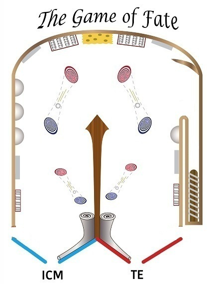
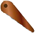
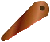

<!DOCTYPE html PUBLIC "-//W3C//DTD XHTML 1.0 Transitional//EN"
    "http://www.w3.org/TR/xhtml1/DTD/xhtml1-transitional.dtd">
<html xmlns="http://www.w3.org/1999/xhtml">
<head>
    <meta http-equiv="Content-Type" content="text/html; charset=UTF-8"/>
	
    <title>The Game of Fate</title>
	<link rel='stylesheet' type='text/css' href='index.css'/>
	<style> 
         body {
            background: #dddddd;
         }
         #canvas {
            background: #ffffff;//#eeeeee;
            border: thin solid #aaaaaa;
			-webkit-box-shadow: 4px 4px 8px rgba(0,0,0,0.5);
			-moz-box-shadow: 4px 4px 8px rgba(0,0,0,0.5);
			box-shadow: 4px 4px 8px rgba(0,0,0,0.5);
         }
		 #textures, .textures {
			display:none;
			visibility:hidden;
		}
    </style>
	<script type="text/javascript">
	//alert(Math.tan(45*Math.PI/180));//角度正切值
	//alert(Math.atan(1)*180/Math.PI);//计算角度
	</script>
</head>
<body>
<div style="margin:0 auto;width:580px; height:auto;text-align: center;">
    <!--<h3>The Game of Fate</h3>-->
    <canvas id="canvas" width="580" height="580" style="display:block;margin:10px auto"></canvas>
</div>
<div id='readoutToast' class='toast'></div>
</body>
	<script type="text/javascript" src="moony.js"></script>
	<script type="text/javascript" src="test.js"></script>







<div style="text-align:center;display:none;">
<p><a href="http://www.topwsoft.com" target="_blank">topwsoft</a></p>
</div>

</html>